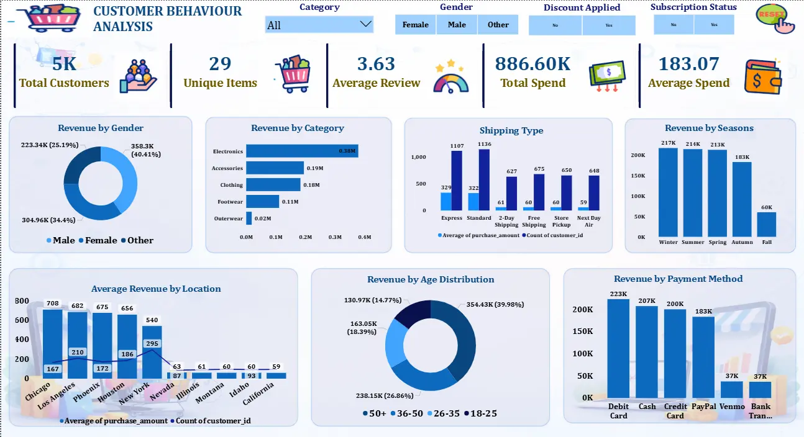
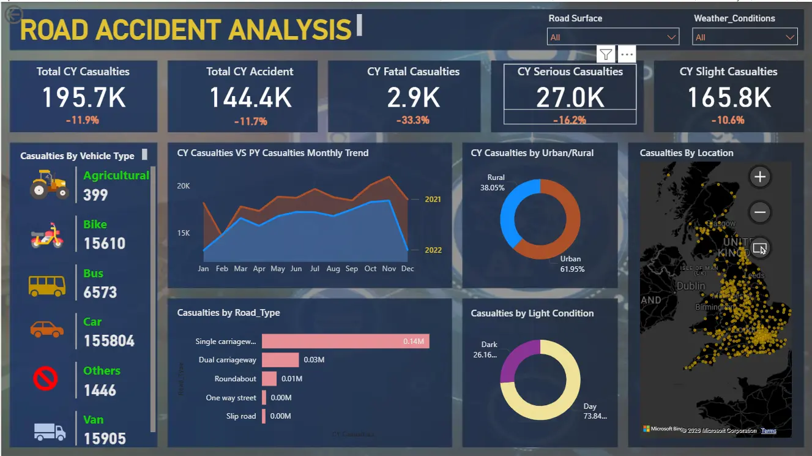

• Data Scope: Analyzed ~5,000 customer transaction records to uncover purchasing patterns.
• Data Cleaning (Python): Performed imputation & category mapping to ensure integrity for business logic.
• SQL Insights: Executed complex queries identifying that subscribers spend 64% more than non-subscribers.
• Market Strategy: Pinpointed the 51+ age group as the highest revenue-generating segment.
• Category Dominance: Electronics identified as the top revenue driver, informing inventory priority.
• Discount Impact: Validated that discount campaigns increased average purchase value from $167 to $202.
• Customer Loyalty: Segmented 5,000 users into New, Returning, and Loyal groups for retention.
• Seasonal Growth: Found Winter, Summer, & Spring seasons drive 73% of annual revenue.
• Visualization: Built an interactive Power BI dashboard tracking KPIs like Total Spend ($886K).
• Actionable Results: Optimized payment methods and shipping strategies based on data-backed trends.

• Core Objective: Conducted a comprehensive analysis of 307K+ accident records to identify safety critical points.
• KPI Tracking: Developed metrics for Total Casualties (418K+) and categorized them by severity (Fatal, Serious, Slight).
• Vehicle Analysis: Identified that 'Cars' account for the highest percentage (79.8%) of total casualties.
• Temporal Trends: Mapped monthly casualty trends, showing a significant peak in November year-over-year.
• Road Conditions: Analyzed the impact of road types, finding 'Single Carriageway' as the highest risk zone (74%).
• Light & Weather: Discovered that 73% of accidents occur during daylight and 80% in dry conditions.
• Urban vs Rural: Segmented data to show Urban areas lead in accident frequency at 62%.
• Advanced DAX: Used complex DAX measures to calculate Year-on-Year (YoY) growth and dynamic filtering.
• Map Integration: Integrated geographic maps to visualize accident hotspots across different regions.
• Strategic Insights: Provided data-driven recommendations for traffic management and emergency response planning.